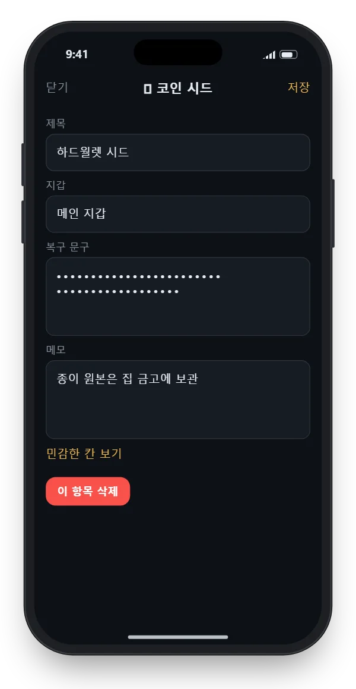

시드 문구 보관 방법: 스크린샷 한 장이 지갑을 털리게 하는 이유
시드 문구 12단어만 있으면 누구든 내 지갑을 통째로 가져갈 수 있습니다. 비밀번호와 달리 바꿀 수도, 되찾을 수도 없어서 어디에 적어 두느냐가 전부입니다.
결론부터: 가장 안전한 기본값은 종이나 금속판에 적어 오프라인으로, 서로 다른 두 곳에 보관하는 것입니다. 휴대폰에도 두고 싶다면 스크린샷이나 메모 앱이 아니라, 인터넷에 올라가지 않는 암호화 금고에 사본으로만 두세요.
절대 하면 안 되는 것
시드 문구는 은행 비밀번호보다 더 위험합니다. 은행은 비밀번호가 새도 거래를 막고 바꿔 주지만, 시드는 아는 사람이 곧 주인입니다. 아래는 실제로 가장 많이 털리는 보관법입니다.
- 스크린샷·사진: 사진 앨범은 클라우드에 자동으로 올라가는 경우가 많습니다. 클라우드 계정 하나만 뚫려도 시드가 넘어갑니다.
- 메모 앱, 카카오톡 나에게 보내기, 이메일: 대부분 서버에 저장되고, 여러 기기에 동기화됩니다.
- 비밀번호 관리자나 문서 파일에 그대로 붙여넣기: 복사하는 순간 클립보드에 남고, 동기화된 다른 기기에도 퍼집니다.
- 누군가에게 알려주기: "지갑 동기화", "본인 확인"을 이유로 시드를 묻는다면 사기입니다. 정상적인 지갑·거래소는 시드를 묻지 않습니다.
보관 방법별 비교
| 방법 | 장점 | 단점 | 추천 |
|---|---|---|---|
| 종이 | 해킹 불가, 비용 0 | 화재·물·빛바램에 약함, 분실 위험 | 기본 원본 |
| 금속판(각인·펀칭) | 화재·물에도 버팀 | 비용이 듦, 새길 때 노출 주의 | 장기 보관 원본 |
| 은행 대여금고·가정용 금고 | 도난·화재 대비 | 바로 꺼내 보기 어려움 | 두 번째 사본 위치 |
| 기기 안 암호화 금고 | 항상 곁에 있음, 서버 노출 없음 | 폰 고장·분실 대비 원본 필요 | 사본 |
| 스크린샷·메모 앱·클라우드 | 편함 | 계정 하나 뚫리면 끝 | 쓰지 않기 |
안전하게 적어 두는 순서
- 혼자 있는 곳에서 지갑이 보여 주는 단어를 받아 적습니다. 카메라가 있는 자리, 화상회의 중은 피합니다.
- 번호를 붙여 순서대로 적습니다. 순서가 틀리면 복원되지 않습니다.
- 철자를 한 번 더 봅니다. 영어 단어 목록은 앞 4글자만으로 단어가 구별되도록 만들어져 있어, 금속판에는 앞 4글자만 새겨도 됩니다.
- 패스프레이즈(추가 비밀번호)를 쓴다면 시드와 다른 곳에 따로 적습니다. 둘이 함께 있으면 의미가 없고, 패스프레이즈를 잃으면 복원할 수 없습니다.
- 원본은 서로 다른 장소 두 곳에 둡니다. 집 한 곳에만 두면 화재·침수 한 번에 모두 잃습니다.
- 연습용으로 적은 메모, 초안 종이는 잘게 찢어 버립니다.
- 여유 기기나 지갑 초기화 후 복원 시험을 한 번 해 보고, 같은 주소가 나오는지 확인합니다. 처음에는 소액으로 시험하세요.
가족이 알아야 할 상황에 대비해, 시드 자체가 아니라 보관 위치와 꺼내는 방법만 적은 안내를 따로 남겨 두는 것도 좋습니다.
폰 암호와 다른 비밀번호로, 만든 사람도 못 여는 금고.
락박스는 시드 사본을 서버에 올리지 않고 폰 안에서만 암호화합니다.
휴대폰에 사본을 둔다면: 락박스
락박스는 서버 없이 아이폰 안에서만 AES-256-GCM으로 암호화하는 금고 앱입니다. 코인 시드 양식이 따로 있어 단어를 칸별로 넣을 수 있고, 민감한 칸은 평소에 가려져 있습니다. 폰 암호와 다른 패턴이나 PIN으로 잠그므로, 폰을 잠깐 빌려줘도 열리지 않습니다.

그래도 휴대폰은 사본 자리입니다. 원본은 종이나 금속판으로 꼭 따로 두세요. 금고 앱을 고르는 기준은 사진 금고 앱 추천 전 꼭 볼 것: '만든 회사도 못 여는' 앱 고르는 5가지 기준에 정리했습니다.
잘 보관해도 털리는 경우 점검표
| 점검 항목 | 왜 위험한가 |
|---|---|
| 예전에 찍은 시드 사진이 남아 있다 | 지워도 최근 삭제된 항목이나 클라우드에 사본이 남을 수 있습니다. |
| 메모 앱에 적었다가 지웠다 | 동기화된 다른 기기나 백업에 남을 수 있습니다. 메모 잠금의 한계는 아이폰 메모 잠금 방법, 잠가도 새어 나가는 4가지 경우를 보세요. |
| 지갑 앱을 검색 광고 링크로 받았다 | 진짜와 똑같은 가짜 앱·사이트가 시드 입력을 유도합니다. 공식 사이트 링크로만 받으세요. |
| 시드를 복사·붙여넣기 했다 | 클립보드를 몰래 읽는 악성 앱이 있습니다. |
| 원본과 패스프레이즈를 한 봉투에 두었다 | 한 번에 둘 다 털리면 패스프레이즈가 아무 의미가 없습니다. |
| 시드를 반씩 잘라 두 곳에 두었다 | 한쪽만 털려도 나머지를 맞힐 경우의 수가 크게 줄어듭니다. |
시드가 노출됐을 때 할 일
- 노출이 의심되면 바로 새 지갑을 새 시드로 만듭니다. 기존 시드는 다시 안전해지지 않습니다.
- 남은 자산을 새 지갑 주소로 즉시 옮깁니다. 노출된 지갑은 자산을 자동으로 빼 가는 프로그램의 표적이 되기도 하니 서두르세요.
- 시드가 담긴 사진·메모·파일을 기기, 최근 삭제된 항목, 클라우드에서 모두 지웁니다.
- 클라우드·이메일 계정의 비밀번호를 바꾸고 2단계 인증을 켭니다.
- "털린 코인을 찾아 주겠다"는 연락은 2차 사기인 경우가 많으니 응하지 않습니다.
폰 암호와 다른 비밀번호로, 만든 사람도 못 여는 금고.
락박스는 시드 사본을 서버에 올리지 않고 폰 안에서만 암호화합니다.
자주 묻는 질문
시드 문구를 둘로 나눠 따로 보관하면 더 안전한가요?
단순히 반씩 나누면 한쪽만 털려도 추측할 경우의 수가 크게 줄어듭니다. 나눠 보관하려면 지갑이 공식 지원하는 분할 백업이나 멀티시그 방식을 쓰세요.
금고 앱에만 보관해도 되나요?
금고 앱은 사본 보관용으로 쓰고, 원본은 종이나 금속판으로 오프라인에 따로 두는 것이 좋습니다. 폰 고장이나 분실에 대비해야 하기 때문입니다.
시드 문구를 잃어버리면 거래소가 찾아줄 수 있나요?
개인 지갑의 시드는 누구도 되찾아 줄 수 없습니다. 거래소 계정과 개인 지갑은 다른 개념입니다.
시드 문구 사진을 이미 찍어 두었다면 어떻게 하나요?
사진을 지우는 것만으로는 부족합니다. 최근 삭제된 항목과 클라우드 사본까지 지우고, 이미 백업된 적이 있다면 새 지갑을 만들어 자산을 옮기는 편이 안전합니다.